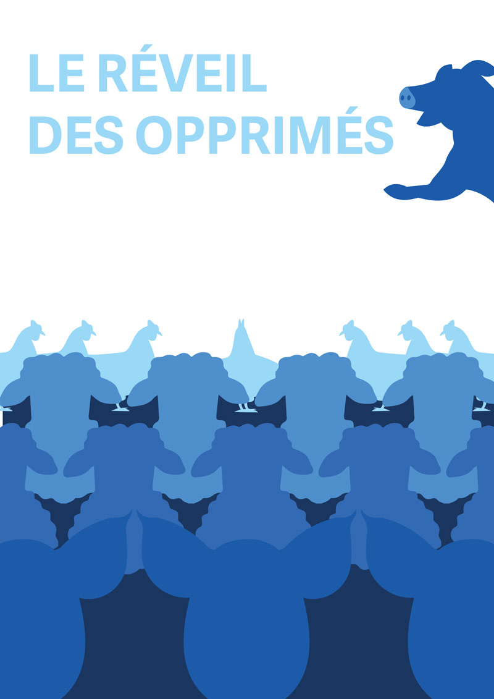

Je me suis lancé dans la conception d’un livre illustré autour du roman La Ferme des Animaux de George Orwell. J’ai structuré l’histoire en neuf chapitres, chacun occupant une double page, avec un titre formulé sous forme de problématique pour introduire les thèmes clés.

« La Ferme des Animaux » de George Orwell est une allégorie satirique où les animaux d’une ferme se révoltent contre leurs oppresseurs humains, mais finissent par subir une tyrannie encore pire sous la domination des cochons. Je m'étais posé la question : l’égalité est-elle possible ?
Mon objectif était de donner du sens à mes images et de transmettre un message. Pour cela, j’ai utilisé des silhouettes, car elles sont facilement compréhensibles et permettent de se concentrer sur le sens derrière l’image. J’ai voulu illustrer l’inégalité à travers la taille, la couleur et le placement des personnages. J’ai choisi le rouge et le bleu, des couleurs contrastées, où le rouge symbolise la tyrannie. Au début, les humains sont représentés en rouge, mais peu à peu, ce sont les cochons qui adoptent cette couleur pour dénoncer la corruption.